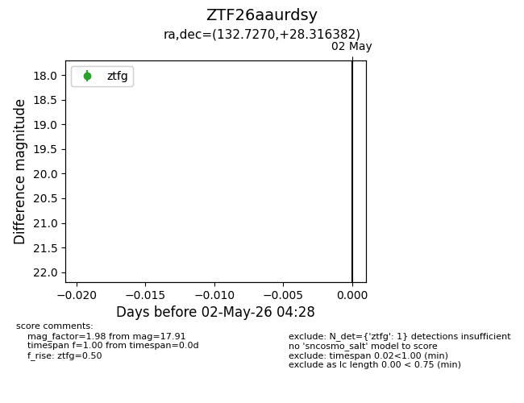
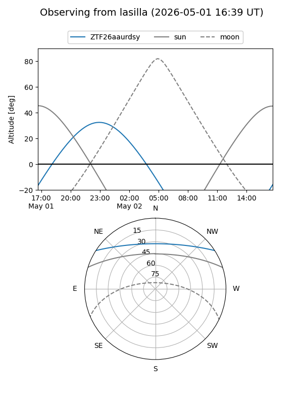
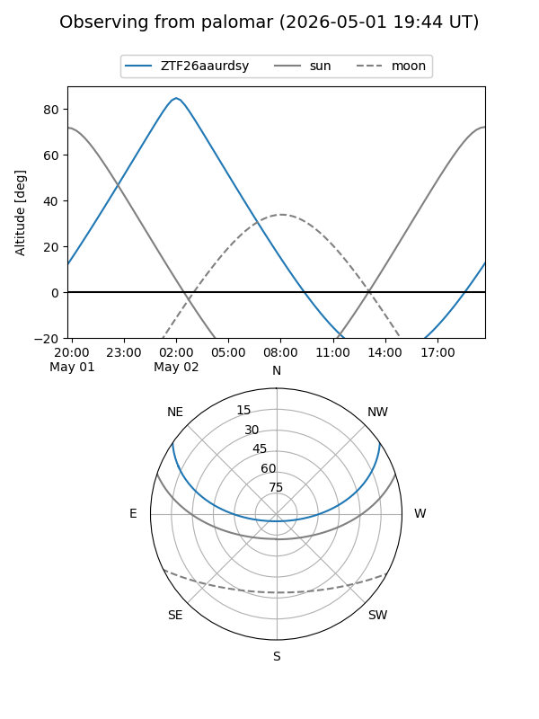

ZTF26aaurdsy
Target ZTF26aaurdsy at 2026-05-02 04:38
Aliases and brokers:
FINK: link
Lasair: link
ALeRCE: link
alt names
ZTF26aaurdsy (ztf,fink_ztf)
Coordinates:
equatorial (ra, dec) = 132.7270,+28.31638
equatorial (HMS+DMS) = 08:50:54.48,+28:18:58.98
galactic (l, b) = (196.7002,+37.33457)
Flags:
Photometry:
last ztfg=17.91
1 ztfg detections
Lightcurve

Visibility


Additional plots